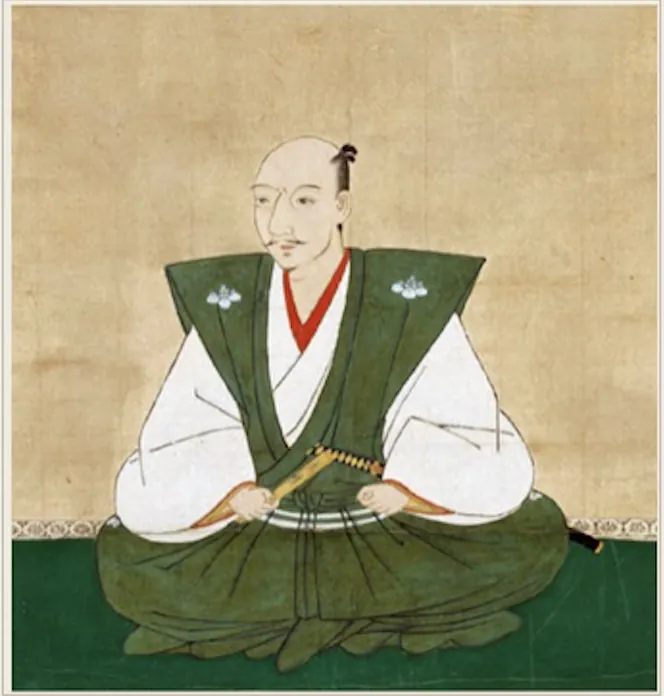
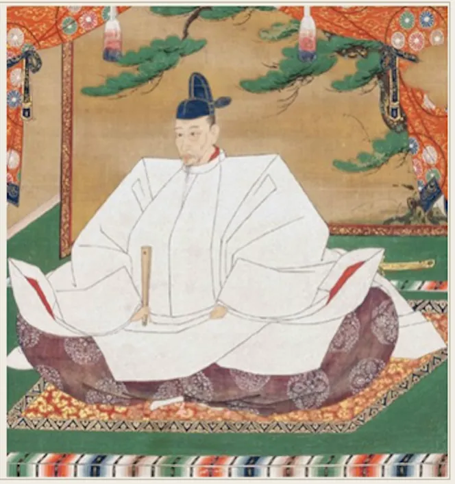
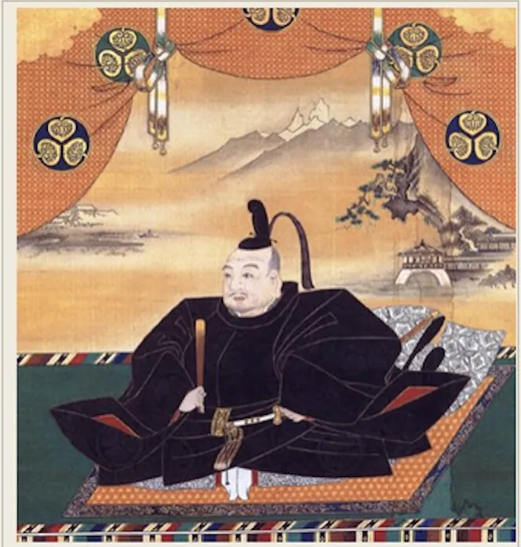

Osaka Castle Walks with Edward · Pre-Tour Companion
三人の男。一つの城。日本を変えた六十年の歴史。

Oda Nobunaga
地を払い清めた武将。 かつてここに立っていた要塞を壊すのに十一年を費やした。

Toyotomi Hideyoshi
一農民から築き上げた人物。 何者でもない者から日本で最も有力な人物へと rises した。 大阪城は、世界への彼の宣言であった。

Tokugawa Ieyasu
すべてを葬り去った生存者。 三十年を待ち、秀吉が築いたすべてを破壊した — 計画的かつ永久に。
この歴史を実際の場所で探究してみませんか？
学校・大学向けの大阪歴史フィールドレッスンでは、先生が設定したテーマや問いをもとに、実際の歴史的景観を使って生徒と歴史を探究します。
学校向けフィールドレッスンを見る →最終更新：2026年9月